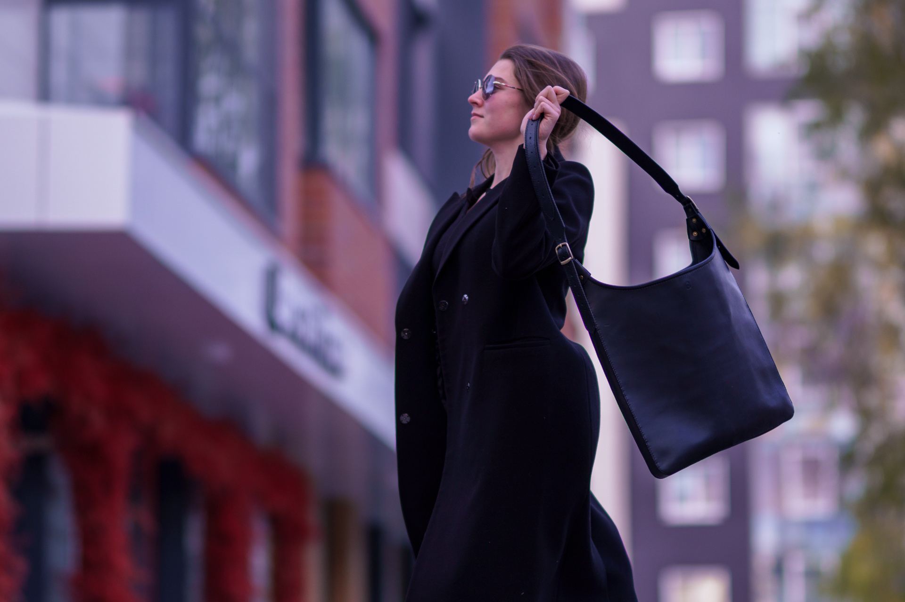
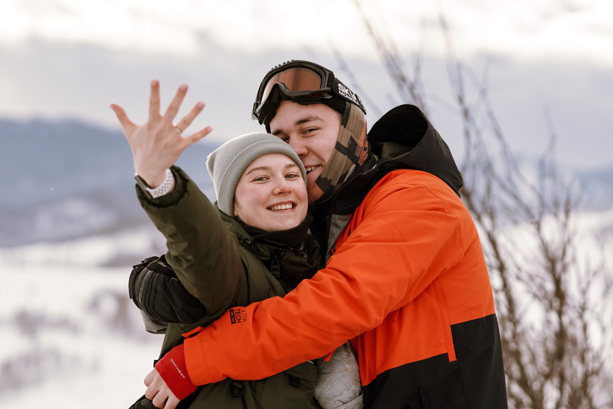
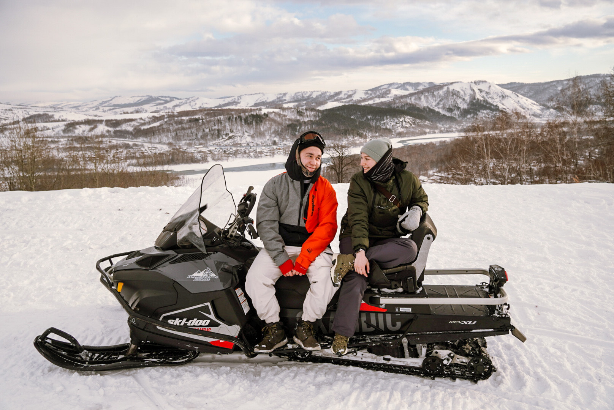
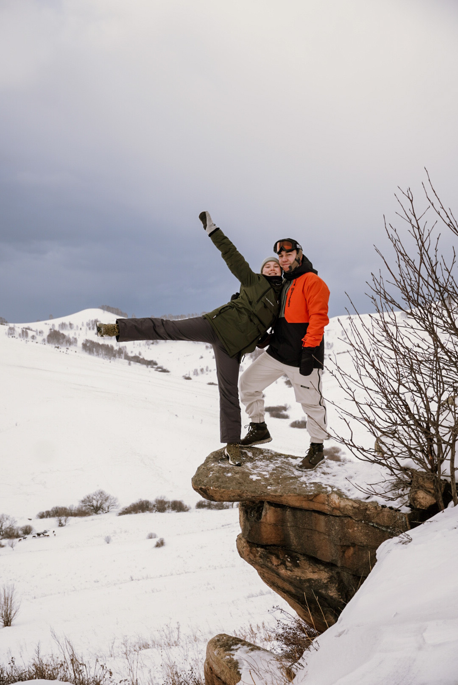

Привет! Раскажу немного о себе. Родился и прожил всю жизнь в городе Ханты-Мансийске. Всегда стремился к чему-то своему, для Питерских покажется банально, но все же вот моя мастерская Да, я приехал учиться в столицу своего ремесла, но уже совсем другому)). Мы с напарником бок-о-бок выращиваем свой бренд уже не первый год. но мне все же хочется постичь что то еще, чему то прикладному, видимо, у меня лежит к этому душа. Подбили меня на сей "Перфоманс" моя знакомая, ныне выпускница группы песцы 2021, и мой DRUG Владислав, мы теперь однокурсники. Приехали жить к моей младшей сестре. Вместе же веселее, хоть и трудно мне, признаюсь. Мой напарник взял на себя ответсвенность остаться одному и вот я здесь, заряженный на прогресс. Одна из моих целей превратить мою мастерскую в приятное хобби с пассивным доходом, и затяться чем то более безграничным.

Занимаюсь бегом, точнее трейлом. Но это больше как для себя, нежели спорт для достижений. Катаюсь на сноуборде и в любом случае вернусь домой, если забуду наушники. Так же у нас в компании друзей зародилась чудная традиция встречать новый год в горах. Правда, в этом году все произошло необчно, я поехал туда с подругой, а уехал с невестой).
   Летом планируем сыграть свадьбу)